Last updated: 2023-01-05
Checks: 7 0
Knit directory: muse/
This reproducible R Markdown analysis was created with workflowr (version 1.7.0). The Checks tab describes the reproducibility checks that were applied when the results were created. The Past versions tab lists the development history.
Great! Since the R Markdown file has been committed to the Git repository, you know the exact version of the code that produced these results.
Great job! The global environment was empty. Objects defined in the global environment can affect the analysis in your R Markdown file in unknown ways. For reproduciblity it’s best to always run the code in an empty environment.
The command set.seed(20200712) was run prior to running
the code in the R Markdown file. Setting a seed ensures that any results
that rely on randomness, e.g. subsampling or permutations, are
reproducible.
Great job! Recording the operating system, R version, and package versions is critical for reproducibility.
Nice! There were no cached chunks for this analysis, so you can be confident that you successfully produced the results during this run.
Great job! Using relative paths to the files within your workflowr project makes it easier to run your code on other machines.
Great! You are using Git for version control. Tracking code development and connecting the code version to the results is critical for reproducibility.
The results in this page were generated with repository version bf76efa. See the Past versions tab to see a history of the changes made to the R Markdown and HTML files.
Note that you need to be careful to ensure that all relevant files for
the analysis have been committed to Git prior to generating the results
(you can use wflow_publish or
wflow_git_commit). workflowr only checks the R Markdown
file, but you know if there are other scripts or data files that it
depends on. Below is the status of the Git repository when the results
were generated:
Ignored files:
Ignored: .Rhistory
Ignored: .Rproj.user/
Ignored: r_packages_4.1.2/
Ignored: r_packages_4.2.0/
Untracked files:
Untracked: analysis/cell_ranger.Rmd
Untracked: analysis/tss_xgboost.Rmd
Untracked: data/ncrna_NONCODE[v3.0].fasta.tar.gz
Untracked: data/ncrna_noncode_v3.fa
Note that any generated files, e.g. HTML, png, CSS, etc., are not included in this status report because it is ok for generated content to have uncommitted changes.
These are the previous versions of the repository in which changes were
made to the R Markdown (analysis/tidymodels.Rmd) and HTML
(docs/tidymodels.html) files. If you’ve configured a remote
Git repository (see ?wflow_git_remote), click on the
hyperlinks in the table below to view the files as they were in that
past version.
| File | Version | Author | Date | Message |
|---|---|---|---|---|
| Rmd | bf76efa | Dave Tang | 2023-01-05 | Resampling and tuning |
| html | 5eaca4e | Dave Tang | 2023-01-04 | Build site. |
| Rmd | 69cc7f4 | Dave Tang | 2023-01-04 | rsample, parsnip, yardstick |
| html | 49c5899 | Dave Tang | 2022-12-12 | Build site. |
| Rmd | d5ddf67 | Dave Tang | 2022-12-12 | quiet |
| html | add50fe | Dave Tang | 2022-12-12 | Build site. |
| Rmd | 419613a | Dave Tang | 2022-12-12 | Tidymodels |
https://www.tidymodels.org/start/models/
my_packages <- c('tidyverse', 'tidymodels', 'broom.mixed', 'dotwhisker', 'rstanarm', 'mlbench', 'ranger', 'randomForest', 'rpart.plot', 'vip', 'modeldata')
for (my_package in my_packages){
if(!require(my_package, character.only = TRUE)){
install.packages(my_package)
}
library(my_package, character.only = TRUE)
}
theme_set(theme_bw())Data from Constable (1993) to explore how three different feeding regimes affect the size of sea urchins over time. The initial size of the sea urchins at the beginning of the experiment probably affects how big they grow as they are fed.
my_csv <- read_csv("https://tidymodels.org/start/models/urchins.csv", show_col_types = FALSE)
head(my_csv)# A tibble: 6 × 3
TREAT IV SUTW
<chr> <dbl> <dbl>
1 Initial 3.5 0.01
2 Initial 5 0.02
3 Initial 8 0.061
4 Initial 10 0.051
5 Initial 13 0.041
6 Initial 13 0.061Change the column names to be more descriptive and change
food_regime into a factor.
For each of the 72 urchins, we know their:
food_regime: either
Initial, Low, or High),initial_volume), andwidth).my_csv %>%
setNames(c("food_regime", "initial_volume", "width")) %>%
mutate(food_regime = factor(food_regime, levels = c("Initial", "Low", "High"))) -> urchins
dim(urchins)[1] 72 3Plot the data.
ggplot(
urchins,
aes(x = initial_volume,
y = width,
group = food_regime,
colour = food_regime)
) +
geom_point() +
geom_smooth(method = lm, se = FALSE) +
scale_color_viridis_d(option = "plasma", end = .7)`geom_smooth()` using formula = 'y ~ x'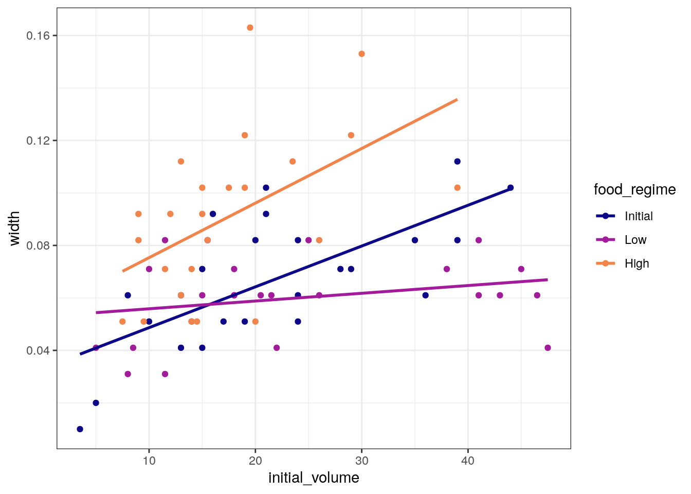
| Version | Author | Date |
|---|---|---|
| add50fe | Dave Tang | 2022-12-12 |
A standard two-way analysis of variance (ANOVA) model makes sense for
this dataset because we have both a continuous predictor
(initial_volume) and a categorical predictor
(food_regime). Since the slopes appear to be different for
at least two of the feeding regimes, let’s build a model that allows for
two-way interactions.
Specifying an R formula with our variables as defined below allows our regression model depending on initial volume to have separate slopes and intercepts for each food regime.
width ~ initial_volume * food_regimewidth ~ initial_volume * food_regimeWith tidymodels, we start by specifying the functional
form of the model that we want by using the parsnip
package. Since there is a numeric outcome and the model should be linear
with slopes and intercepts, the model type is “linear regression”.
linear_reg()Linear Regression Model Specification (regression)
Computational engine: lm Now we can think about a method for fitting or training the model,
i.e. the model engine. The engine value is often a mash-up of the
software that can be used to fit or train the model as well as the
estimation method. The default for linear_reg() is
lm for ordinary least squares. The documentation page for
linear_reg() lists all the possible engines.
We’ll save our model object as lm_mod using the default
engine.
lm_mod <- linear_reg()The model can now be estimated or trained using the
fit() function.
lm_mod %>%
fit(width ~ initial_volume * food_regime, data = urchins) -> lm_fit
lm_fitparsnip model object
Call:
stats::lm(formula = width ~ initial_volume * food_regime, data = data)
Coefficients:
(Intercept) initial_volume
0.0331216 0.0015546
food_regimeLow food_regimeHigh
0.0197824 0.0214111
initial_volume:food_regimeLow initial_volume:food_regimeHigh
-0.0012594 0.0005254 Many models have a tidy() method that provides the
summary results in a more predictable and useful format.
tidy(lm_fit)# A tibble: 6 × 5
term estimate std.error statistic p.value
<chr> <dbl> <dbl> <dbl> <dbl>
1 (Intercept) 0.0331 0.00962 3.44 0.00100
2 initial_volume 0.00155 0.000398 3.91 0.000222
3 food_regimeLow 0.0198 0.0130 1.52 0.133
4 food_regimeHigh 0.0214 0.0145 1.47 0.145
5 initial_volume:food_regimeLow -0.00126 0.000510 -2.47 0.0162
6 initial_volume:food_regimeHigh 0.000525 0.000702 0.748 0.457 Generate a dot-and-whisker plot of our regression results using the
dotwhisker package.
tidy(lm_fit) %>%
dwplot(
dot_args = list(size = 2, color = "black"),
whisker_args = list(color = "black"),
vline = geom_vline(
xintercept = 0,
colour = "grey50",
linetype = 2
)
)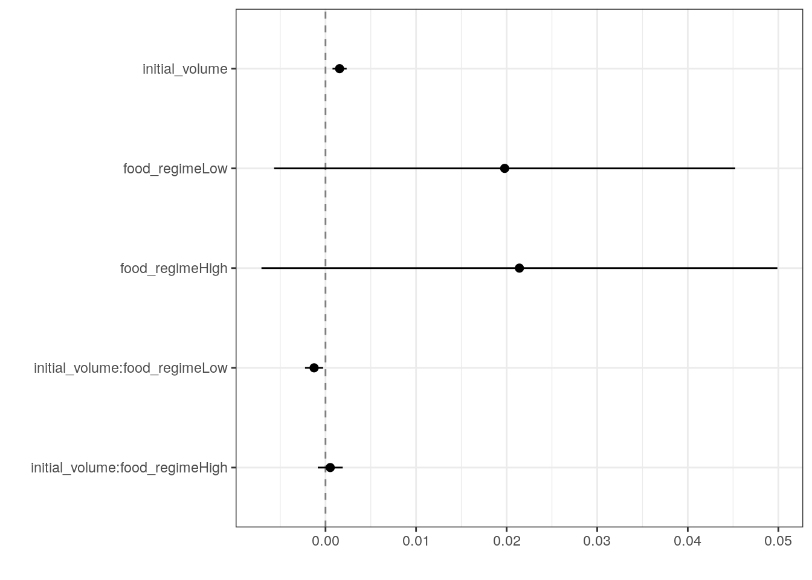
| Version | Author | Date |
|---|---|---|
| add50fe | Dave Tang | 2022-12-12 |
The fitted object lm_fit has the lm model
output built-in, which you can access with lm_fit$fit, but
there are some benefits to using the fitted parsnip model
object when it comes to predicting.
Suppose that, for a publication, it would be particularly interesting to make a plot of the mean body size for urchins that started the experiment with an initial volume of 20ml. To create such a graph, we start with some new example data that we will make predictions for.
new_points <- expand.grid(
initial_volume = 20,
food_regime = c("Initial", "Low", "High")
)
new_points initial_volume food_regime
1 20 Initial
2 20 Low
3 20 HighGenerate the mean body width values.
mean_pred <- predict(lm_fit, new_data = new_points)
mean_pred# A tibble: 3 × 1
.pred
<dbl>
1 0.0642
2 0.0588
3 0.0961When making predictions, the tidymodels convention is to always produce a tibble of results with standardized column names. This makes it easy to combine the original data and the predictions in a usable format.
conf_int_pred <- predict(
lm_fit,
new_data = new_points,
type = "conf_int"
)
plot_data <-
new_points %>%
bind_cols(mean_pred) %>%
bind_cols(conf_int_pred)
ggplot(
plot_data,
aes(x = food_regime)
) +
geom_point(aes(y = .pred)) +
geom_errorbar(
aes(ymin = .pred_lower, ymax = .pred_upper),
width = .2
) +
labs(y = "urchin size")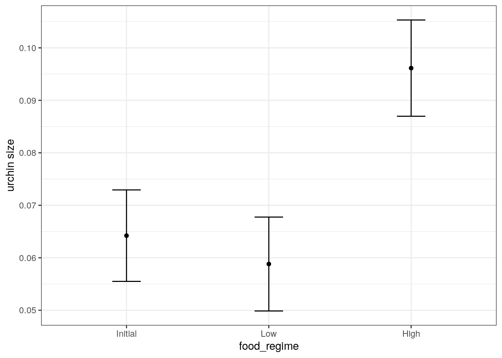
| Version | Author | Date |
|---|---|---|
| add50fe | Dave Tang | 2022-12-12 |
We are interested in knowing if the results would be different if the model were estimated using a Bayesian approach. In such an analysis, a prior distribution needs to be declared for each model parameter that represents the possible values of the parameters (before being exposed to the observed data). After some discussion, the group agrees that the priors should be bell-shaped but, since no one has any idea what the range of values should be, to take a conservative approach and make the priors wide using a Cauchy distribution (which is the same as a t-distribution with a single degree of freedom).
The documentation on the rstanarm package shows us that
the stan_glm() function can be used to estimate this model,
and that the function arguments that need to be specified are called
prior and prior_intercept.
It turns out that linear_reg() has a stan
engine. Since these prior distribution arguments are specific to the
Stan software, they are passed as arguments to
parsnip::set_engine().
# set the prior distribution
prior_dist <- rstanarm::student_t(df = 1)
set.seed(123)
# make the parsnip model
bayes_mod <-
linear_reg() %>%
set_engine("stan",
prior_intercept = prior_dist,
prior = prior_dist)
# train the model
bayes_fit <-
bayes_mod %>%
fit(width ~ initial_volume * food_regime, data = urchins)
print(bayes_fit, digits = 5)parsnip model object
stan_glm
family: gaussian [identity]
formula: width ~ initial_volume * food_regime
observations: 72
predictors: 6
------
Median MAD_SD
(Intercept) 0.03314 0.00998
initial_volume 0.00155 0.00040
food_regimeLow 0.01991 0.01332
food_regimeHigh 0.02132 0.01487
initial_volume:food_regimeLow -0.00125 0.00051
initial_volume:food_regimeHigh 0.00053 0.00072
Auxiliary parameter(s):
Median MAD_SD
sigma 0.02135 0.00185
------
* For help interpreting the printed output see ?print.stanreg
* For info on the priors used see ?prior_summary.stanregTo update the parameter table, the tidy() method is once
again used.
tidy(bayes_fit, conf.int = TRUE)# A tibble: 6 × 5
term estimate std.error conf.low conf.high
<chr> <dbl> <dbl> <dbl> <dbl>
1 (Intercept) 0.0331 0.00998 0.0167 0.0493
2 initial_volume 0.00155 0.000402 0.000891 0.00223
3 food_regimeLow 0.0199 0.0133 -0.00251 0.0418
4 food_regimeHigh 0.0213 0.0149 -0.00379 0.0462
5 initial_volume:food_regimeLow -0.00125 0.000515 -0.00212 -0.000396
6 initial_volume:food_regimeHigh 0.000533 0.000725 -0.000628 0.00170 A goal of the tidymodels packages is that the interfaces
to common tasks are standardised (as seen in the tidy()
results above). The same is true for getting predictions; we can use the
same code even though the underlying packages use very different
syntax.
bayes_plot_data <-
new_points %>%
bind_cols(predict(bayes_fit, new_data = new_points)) %>%
bind_cols(predict(bayes_fit, new_data = new_points, type = "conf_int"))
ggplot(bayes_plot_data, aes(x = food_regime)) +
geom_point(aes(y = .pred)) +
geom_errorbar(aes(ymin = .pred_lower, ymax = .pred_upper), width = .2) +
labs(y = "urchin size") +
ggtitle("Bayesian model with t(1) prior distribution")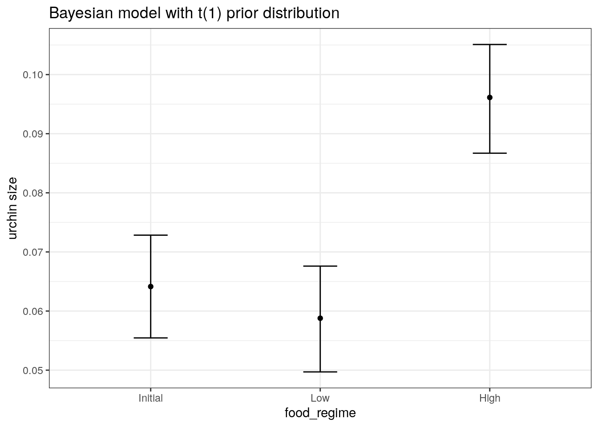
| Version | Author | Date |
|---|---|---|
| add50fe | Dave Tang | 2022-12-12 |
Load and split data using rsample.
The initial_split() function takes the original data and
saves the information on how to make the partitions.
The strata argument conducts a stratified split ensuring
that our training and test data sets will keep roughly the same
proportion of classes.
data(Sonar, package = "mlbench")
set.seed(1984)
sonar_split <- initial_split(data = Sonar, prop = 0.8, strata = 'Class')
sonar_train <- training(sonar_split)
sonar_test <- testing(sonar_split)parsnipThe parsnip package provides a tidy and unified interface to a range of models.
my_mtry <- ceiling(sqrt(ncol(Sonar)))
rf_ranger <- list()
rand_forest(mtry = my_mtry, trees = 500) %>%
set_engine("ranger", importance = "impurity") %>%
set_mode("classification") -> rf_ranger$model
rf_ranger$model %>%
fit(Class ~ ., data = sonar_train) -> rf_ranger$fit
rf_randomForest <- list()
rand_forest(mtry = my_mtry, trees = 500) %>%
set_engine("randomForest") %>%
set_mode("classification") -> rf_randomForest$model
rf_randomForest$model %>%
fit(Class ~ ., data = sonar_train) -> rf_randomForest$fityardstickExample data to check how to prepare our data.
data(two_class_example)
str(two_class_example)'data.frame': 500 obs. of 4 variables:
$ truth : Factor w/ 2 levels "Class1","Class2": 2 1 2 1 2 1 1 1 2 2 ...
$ Class1 : num 0.00359 0.67862 0.11089 0.73516 0.01624 ...
$ Class2 : num 0.996 0.321 0.889 0.265 0.984 ...
$ predicted: Factor w/ 2 levels "Class1","Class2": 2 1 2 1 2 1 1 1 2 2 ...Predict and generate table in the format of
two_class_example.
predict_wrapper <- function(fit, test_data, type = 'prob'){
predict(fit, test_data, type = type) %>%
mutate(truth = test_data$Class) %>%
rename(
M = .pred_M,
R = .pred_R
) %>%
mutate(predicted = as.factor(ifelse(M > 0.5, 'M', 'R'))) %>%
select(truth, everything())
}
rf_ranger$predictions <- predict_wrapper(rf_ranger$fit, sonar_test)
rf_randomForest$predictions <- predict_wrapper(rf_randomForest$fit, sonar_test)Area under the PR curve.
pr_auc(rf_ranger$predictions, truth, M)# A tibble: 1 × 3
.metric .estimator .estimate
<chr> <chr> <dbl>
1 pr_auc binary 0.926pr_auc(rf_randomForest$predictions, truth, M)# A tibble: 1 × 3
.metric .estimator .estimate
<chr> <chr> <dbl>
1 pr_auc binary 0.913pr_curve(rf_ranger$predictions, truth, M) %>%
ggplot(aes(x = recall, y = precision)) +
geom_path() +
coord_equal() +
ggtitle('PR curve (ranger package model)')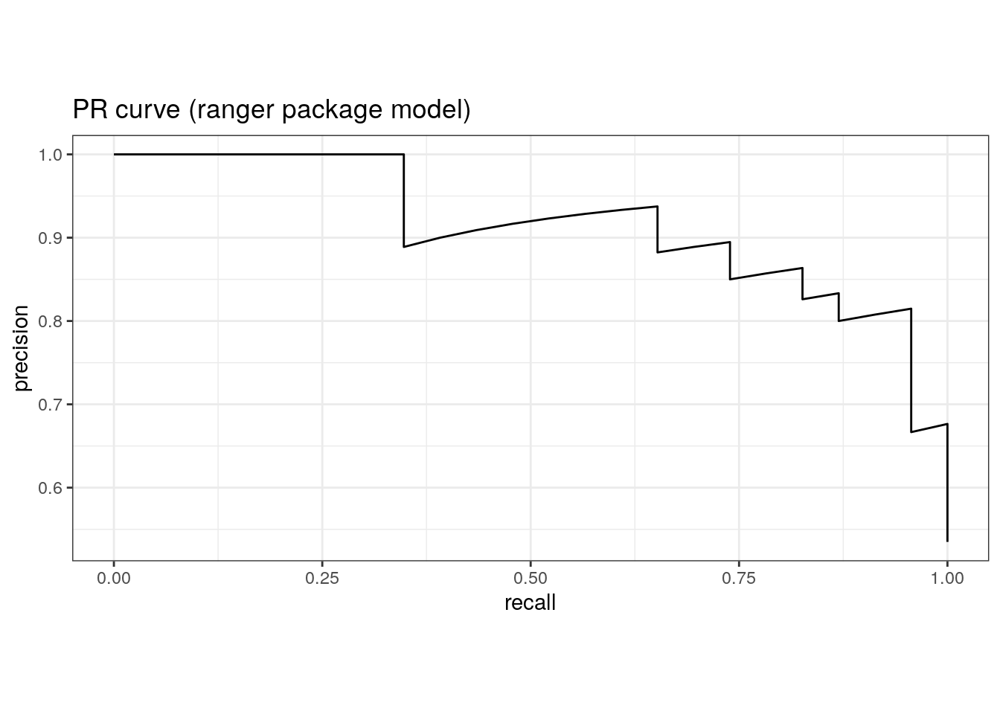
| Version | Author | Date |
|---|---|---|
| 5eaca4e | Dave Tang | 2023-01-04 |
pr_curve(rf_randomForest$predictions, truth, M) %>%
ggplot(aes(x = recall, y = precision)) +
geom_path() +
coord_equal() +
ggtitle('PR curve (randomForest package model)')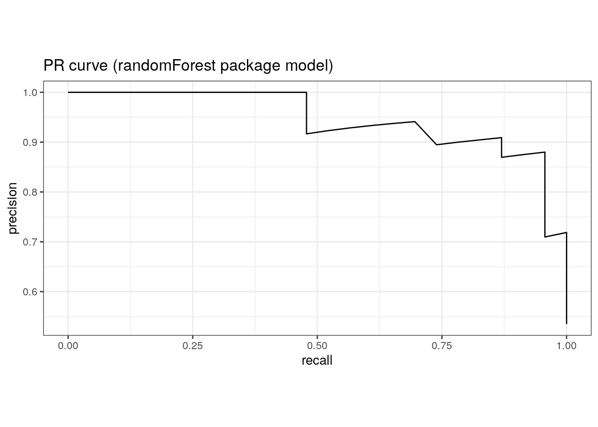
| Version | Author | Date |
|---|---|---|
| 5eaca4e | Dave Tang | 2023-01-04 |
Area under the ROC curve.
roc_auc(rf_ranger$predictions, truth, M)# A tibble: 1 × 3
.metric .estimator .estimate
<chr> <chr> <dbl>
1 roc_auc binary 0.904roc_auc(rf_randomForest$predictions, truth, M)# A tibble: 1 × 3
.metric .estimator .estimate
<chr> <chr> <dbl>
1 roc_auc binary 0.890roc_curve(rf_ranger$predictions, truth, M) %>%
ggplot(aes(x = 1 - specificity, y = sensitivity)) +
geom_path() +
geom_abline(lty = 3) +
coord_equal() +
ggtitle('ROC curve (ranger package model)')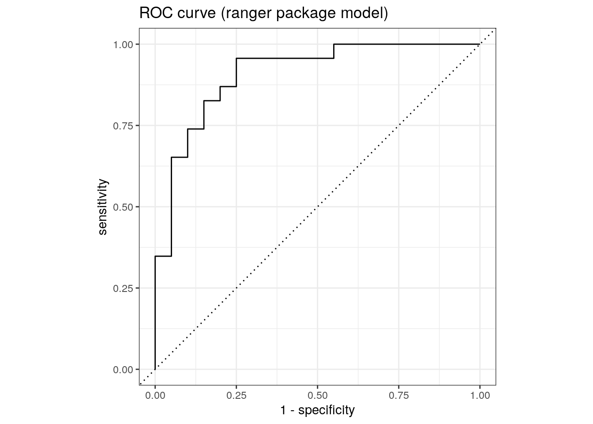
| Version | Author | Date |
|---|---|---|
| 5eaca4e | Dave Tang | 2023-01-04 |
roc_curve(rf_randomForest$predictions, truth, M) %>%
ggplot(aes(x = 1 - specificity, y = sensitivity)) +
geom_path() +
geom_abline(lty = 3) +
coord_equal() +
ggtitle('ROC curve (randomForest package model)')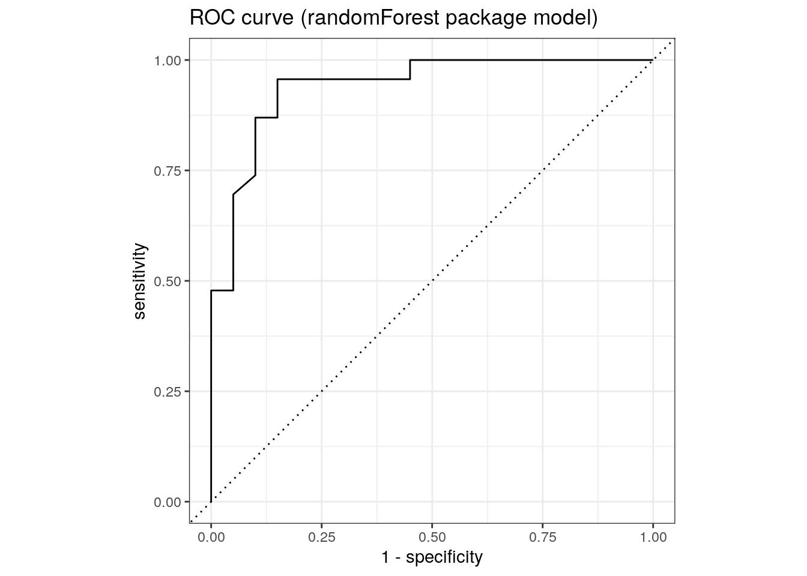
| Version | Author | Date |
|---|---|---|
| 5eaca4e | Dave Tang | 2023-01-04 |
Resampling methods, such as cross-validation and the bootstrap, are empirical simulation systems. They create a series of data sets similar to the training/testing split discussed previously; a subset of the data are used for creating the model and a different subset is used to measure performance. Resampling is always used with the training set.
Cross-validation folds can be created using vfold_cv().
Here we perform a 5-fold cross-validation, which splits the data into
80/20, repeated 3 times.
set.seed(1984)
folds <- vfold_cv(sonar_train, v = 5, repeats = 3)
folds# 5-fold cross-validation repeated 3 times
# A tibble: 15 × 3
splits id id2
<list> <chr> <chr>
1 <split [132/33]> Repeat1 Fold1
2 <split [132/33]> Repeat1 Fold2
3 <split [132/33]> Repeat1 Fold3
4 <split [132/33]> Repeat1 Fold4
5 <split [132/33]> Repeat1 Fold5
6 <split [132/33]> Repeat2 Fold1
7 <split [132/33]> Repeat2 Fold2
8 <split [132/33]> Repeat2 Fold3
9 <split [132/33]> Repeat2 Fold4
10 <split [132/33]> Repeat2 Fold5
11 <split [132/33]> Repeat3 Fold1
12 <split [132/33]> Repeat3 Fold2
13 <split [132/33]> Repeat3 Fold3
14 <split [132/33]> Repeat3 Fold4
15 <split [132/33]> Repeat3 Fold5Use workflow() to bundle a model and formula.
workflow() %>%
add_model(rf_ranger$model) %>%
add_formula(Class ~ .) -> rf_ranger$wf
set.seed(1984)
rf_ranger$wf %>%
fit_resamples(folds) -> rf_ranger$fit_rs
workflow() %>%
add_model(rf_randomForest$model) %>%
add_formula(Class ~ .) -> rf_randomForest$wf
set.seed(1984)
rf_randomForest$wf %>%
fit_resamples(folds) -> rf_randomForest$fit_rsMetrics.
collect_metrics(rf_ranger$fit_rs)# A tibble: 2 × 6
.metric .estimator mean n std_err .config
<chr> <chr> <dbl> <int> <dbl> <chr>
1 accuracy binary 0.810 15 0.0183 Preprocessor1_Model1
2 roc_auc binary 0.918 15 0.0125 Preprocessor1_Model1collect_metrics(rf_randomForest$fit_rs)# A tibble: 2 × 6
.metric .estimator mean n std_err .config
<chr> <chr> <dbl> <int> <dbl> <chr>
1 accuracy binary 0.818 15 0.0156 Preprocessor1_Model1
2 roc_auc binary 0.925 15 0.0110 Preprocessor1_Model1Compare with single sample.
roc_auc(rf_ranger$predictions, truth, M)# A tibble: 1 × 3
.metric .estimator .estimate
<chr> <chr> <dbl>
1 roc_auc binary 0.904roc_auc(rf_randomForest$predictions, truth, M)# A tibble: 1 × 3
.metric .estimator .estimate
<chr> <chr> <dbl>
1 roc_auc binary 0.890Some model parameters cannot be learned directly from a data set during model training; these kinds of parameters are called hyperparameters. Instead of learning these kinds of hyperparameters during model training, we can estimate the best values for these values by training many models on resampled data sets and exploring how well all these models perform. This process is called tuning.
Prepare data.
data(cells, package = "modeldata")
set.seed(123)
cell_split <- initial_split(
cells %>% select(-case),
strata = class
)
cell_train <- training(cell_split)
cell_test <- testing(cell_split)Tune cost_complexity and tree_depth. Use
args() to see which parsnip object arguments are available
for tuning.
tune_spec <-
decision_tree(
cost_complexity = tune(),
tree_depth = tune()
) %>%
set_engine("rpart") %>%
set_mode("classification")
tune_specDecision Tree Model Specification (classification)
Main Arguments:
cost_complexity = tune()
tree_depth = tune()
Computational engine: rpart Create grid using grid_regular, which chooses sensible
values to try for each hyperparameter. Since we have two parameters to
tune, there are 25 different combinations.
tree_grid <- grid_regular(
cost_complexity(),
tree_depth(),
levels = 5
)
tree_grid# A tibble: 25 × 2
cost_complexity tree_depth
<dbl> <int>
1 0.0000000001 1
2 0.0000000178 1
3 0.00000316 1
4 0.000562 1
5 0.1 1
6 0.0000000001 4
7 0.0000000178 4
8 0.00000316 4
9 0.000562 4
10 0.1 4
# … with 15 more rowsCreate cross-validation folds (default is 10-fold).
set.seed(234)
cell_folds <- vfold_cv(cell_train)
cell_folds# 10-fold cross-validation
# A tibble: 10 × 2
splits id
<list> <chr>
1 <split [1362/152]> Fold01
2 <split [1362/152]> Fold02
3 <split [1362/152]> Fold03
4 <split [1362/152]> Fold04
5 <split [1363/151]> Fold05
6 <split [1363/151]> Fold06
7 <split [1363/151]> Fold07
8 <split [1363/151]> Fold08
9 <split [1363/151]> Fold09
10 <split [1363/151]> Fold10Workflow.
set.seed(345)
tree_wf <- workflow() %>%
add_model(tune_spec) %>%
add_formula(class ~ .)
system.time(
tree_res <-
tree_wf %>%
tune_grid(
resamples = cell_folds,
grid = tree_grid
)
) user system elapsed
356.093 1569.760 86.919 Show best and select best metrics.
tree_res %>%
show_best("roc_auc")# A tibble: 5 × 8
cost_complexity tree_depth .metric .estimator mean n std_err .config
<dbl> <int> <chr> <chr> <dbl> <int> <dbl> <chr>
1 0.000562 11 roc_auc binary 0.855 10 0.0147 Preprocesso…
2 0.0000000001 11 roc_auc binary 0.854 10 0.0146 Preprocesso…
3 0.0000000178 11 roc_auc binary 0.854 10 0.0146 Preprocesso…
4 0.00000316 11 roc_auc binary 0.854 10 0.0146 Preprocesso…
5 0.000562 8 roc_auc binary 0.854 10 0.0145 Preprocesso…tree_res %>%
select_best("roc_auc")# A tibble: 1 × 3
cost_complexity tree_depth .config
<dbl> <int> <chr>
1 0.000562 11 Preprocessor1_Model19Plot.
tree_res %>%
collect_metrics() %>%
mutate(tree_depth = factor(tree_depth)) %>%
ggplot(aes(cost_complexity, mean, color = tree_depth)) +
geom_line(linewidth = 1.5, alpha = 0.6) +
geom_point(size = 2) +
facet_wrap(~ .metric, scales = "free", nrow = 2) +
scale_x_log10(labels = scales::label_number()) +
scale_color_viridis_d(option = "plasma", begin = .9, end = 0)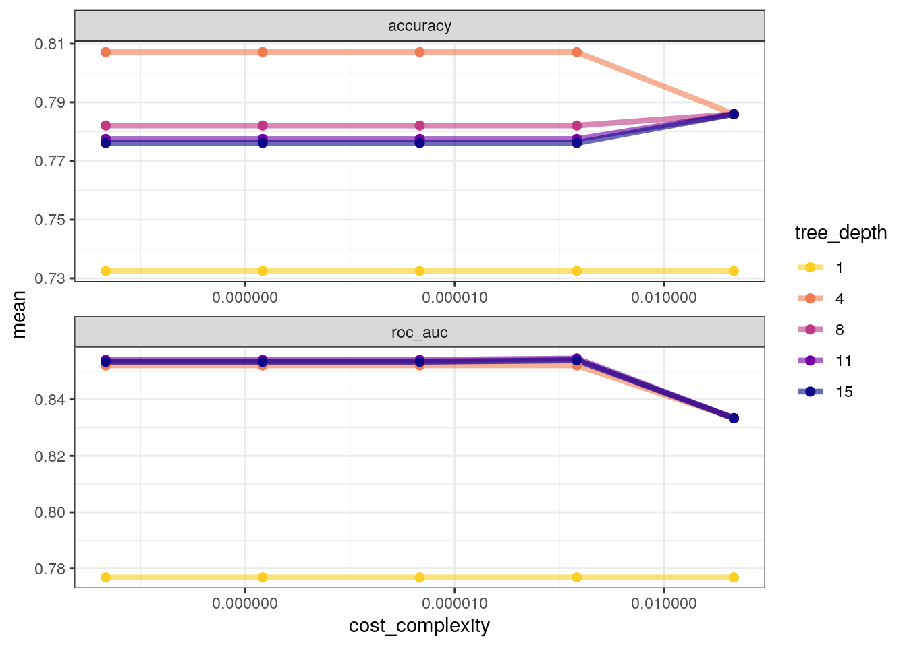
Finalise.
tree_res %>%
select_best("accuracy") -> best_tree
final_wf <-
tree_wf %>%
finalize_workflow(best_tree)
final_wf══ Workflow ════════════════════════════════════════════════════════════════════
Preprocessor: Formula
Model: decision_tree()
── Preprocessor ────────────────────────────────────────────────────────────────
class ~ .
── Model ───────────────────────────────────────────────────────────────────────
Decision Tree Model Specification (classification)
Main Arguments:
cost_complexity = 1e-10
tree_depth = 4
Computational engine: rpart Last fit using last_fit, which fits the
finalised model on the full training data set and evaluates the
finalised model on the testing data.
final_fit <-
final_wf %>%
last_fit(cell_split)
final_fit %>%
collect_metrics()# A tibble: 2 × 4
.metric .estimator .estimate .config
<chr> <chr> <dbl> <chr>
1 accuracy binary 0.802 Preprocessor1_Model1
2 roc_auc binary 0.840 Preprocessor1_Model1final_fit %>%
collect_predictions() %>%
roc_curve(class, .pred_PS) %>%
autoplot()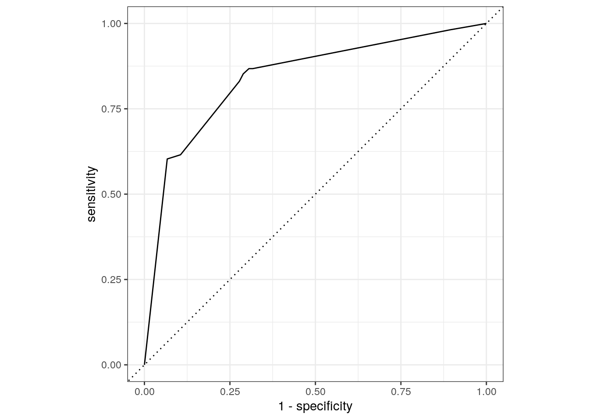
The final_fit object contains a finalised, fitted
workflow that you can use for predicting on new data or further
understanding the results. You may want to extract this object, using
one of the extract_ helper functions.
final_tree <- extract_workflow(final_fit)
final_tree %>%
extract_fit_engine() %>%
rpart.plot(roundint = FALSE)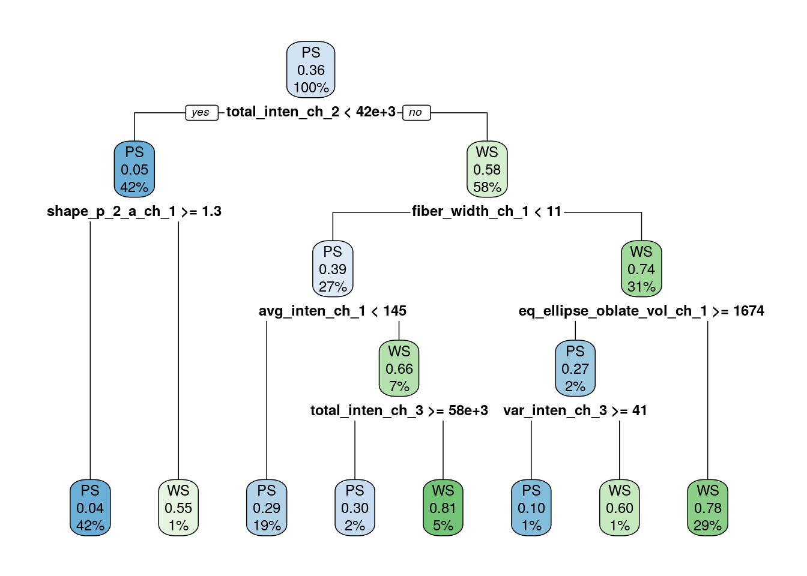
Variable importance.
final_tree %>%
extract_fit_parsnip() %>%
vip()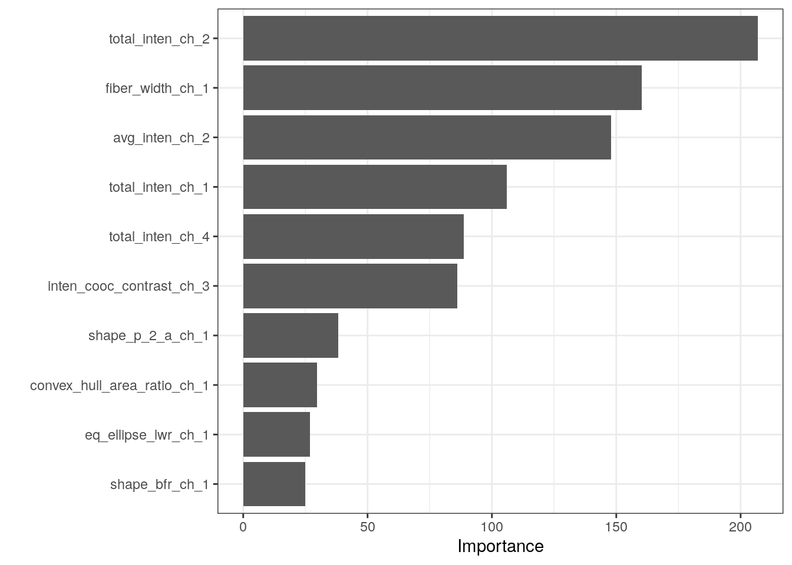
sessionInfo()R version 4.2.0 (2022-04-22)
Platform: x86_64-pc-linux-gnu (64-bit)
Running under: Ubuntu 20.04.4 LTS
Matrix products: default
BLAS: /usr/lib/x86_64-linux-gnu/openblas-pthread/libblas.so.3
LAPACK: /usr/lib/x86_64-linux-gnu/openblas-pthread/liblapack.so.3
locale:
[1] LC_CTYPE=en_US.UTF-8 LC_NUMERIC=C
[3] LC_TIME=en_US.UTF-8 LC_COLLATE=en_US.UTF-8
[5] LC_MONETARY=en_US.UTF-8 LC_MESSAGES=en_US.UTF-8
[7] LC_PAPER=en_US.UTF-8 LC_NAME=C
[9] LC_ADDRESS=C LC_TELEPHONE=C
[11] LC_MEASUREMENT=en_US.UTF-8 LC_IDENTIFICATION=C
attached base packages:
[1] stats graphics grDevices utils datasets methods base
other attached packages:
[1] vip_0.3.2 rpart.plot_3.1.1 rpart_4.1.19
[4] randomForest_4.7-1.1 ranger_0.14.1 mlbench_2.1-3
[7] rstanarm_2.21.3 Rcpp_1.0.9 dotwhisker_0.7.4
[10] broom.mixed_0.2.9.4 yardstick_1.1.0 workflowsets_1.0.0
[13] workflows_1.1.2 tune_1.0.1 rsample_1.1.1
[16] recipes_1.0.3 parsnip_1.0.3 modeldata_1.0.1
[19] infer_1.0.4 dials_1.1.0 scales_1.2.1
[22] broom_1.0.1 tidymodels_1.0.0 forcats_0.5.2
[25] stringr_1.4.1 dplyr_1.0.10 purrr_0.3.5
[28] readr_2.1.3 tidyr_1.2.1 tibble_3.1.8
[31] ggplot2_3.4.0 tidyverse_1.3.2 workflowr_1.7.0
loaded via a namespace (and not attached):
[1] utf8_1.2.2 ggstance_0.3.6 tidyselect_1.2.0
[4] lme4_1.1-31 htmlwidgets_1.5.4 grid_4.2.0
[7] munsell_0.5.0 codetools_0.2-18 DT_0.26
[10] future_1.29.0 miniUI_0.1.1.1 withr_2.5.0
[13] colorspace_2.0-3 highr_0.9 knitr_1.40
[16] rstudioapi_0.14 stats4_4.2.0 modelenv_0.1.0
[19] bayesplot_1.10.0 listenv_0.8.0 labeling_0.4.2
[22] git2r_0.30.1 rstan_2.21.7 farver_2.1.1
[25] bit64_4.0.5 DiceDesign_1.9 datawizard_0.6.4
[28] rprojroot_2.0.3 parallelly_1.32.1 vctrs_0.5.0
[31] generics_0.1.3 ipred_0.9-13 xfun_0.34
[34] R6_2.5.1 markdown_1.3 lhs_1.1.5
[37] cachem_1.0.6 assertthat_0.2.1 vroom_1.6.0
[40] promises_1.2.0.1 nnet_7.3-18 googlesheets4_1.0.1
[43] gtable_0.3.1 globals_0.16.1 processx_3.8.0
[46] timeDate_4021.107 rlang_1.0.6 splines_4.2.0
[49] gargle_1.2.1 inline_0.3.19 yaml_2.3.6
[52] reshape2_1.4.4 modelr_0.1.10 threejs_0.3.3
[55] crosstalk_1.2.0 backports_1.4.1 httpuv_1.6.6
[58] tools_4.2.0 lava_1.7.0 ellipsis_0.3.2
[61] jquerylib_0.1.4 plyr_1.8.8 base64enc_0.1-3
[64] ps_1.7.2 prettyunits_1.1.1 zoo_1.8-11
[67] haven_2.5.1 fs_1.5.2 furrr_0.3.1
[70] magrittr_2.0.3 colourpicker_1.2.0 reprex_2.0.2
[73] GPfit_1.0-8 googledrive_2.0.0 whisker_0.4
[76] matrixStats_0.62.0 hms_1.1.2 shinyjs_2.1.0
[79] mime_0.12 evaluate_0.18 xtable_1.8-4
[82] shinystan_2.6.0 readxl_1.4.1 gridExtra_2.3
[85] rstantools_2.2.0 compiler_4.2.0 crayon_1.5.2
[88] minqa_1.2.5 StanHeaders_2.21.0-7 htmltools_0.5.3
[91] mgcv_1.8-41 later_1.3.0 tzdb_0.3.0
[94] RcppParallel_5.1.5 lubridate_1.8.0 DBI_1.1.3
[97] dbplyr_2.2.1 MASS_7.3-58.1 boot_1.3-28
[100] Matrix_1.5-3 cli_3.4.1 parallel_4.2.0
[103] insight_0.18.8 gower_1.0.0 igraph_1.3.5
[106] pkgconfig_2.0.3 getPass_0.2-2 xml2_1.3.3
[109] foreach_1.5.2 dygraphs_1.1.1.6 bslib_0.4.1
[112] hardhat_1.2.0 prodlim_2019.11.13 rvest_1.0.3
[115] callr_3.7.3 digest_0.6.30 parameters_0.20.0
[118] rmarkdown_2.18 cellranger_1.1.0 curl_4.3.3
[121] shiny_1.7.3 gtools_3.9.4 nloptr_2.0.3
[124] lifecycle_1.0.3 nlme_3.1-160 jsonlite_1.8.3
[127] viridisLite_0.4.1 fansi_1.0.3 pillar_1.8.1
[130] lattice_0.20-45 loo_2.5.1 fastmap_1.1.0
[133] httr_1.4.4 pkgbuild_1.4.0 survival_3.4-0
[136] glue_1.6.2 xts_0.12.2 bayestestR_0.13.0
[139] shinythemes_1.2.0 iterators_1.0.14 bit_4.0.4
[142] class_7.3-20 stringi_1.7.8 sass_0.4.2
[145] future.apply_1.10.0